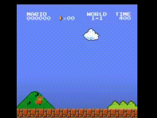
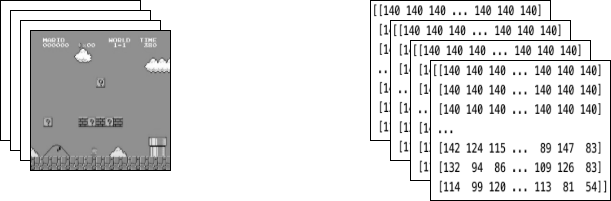

备注
点击此处下载完整示例代码
训练一个玩马里奥的强化学习代理
创建时间：2025 年 4 月 1 日 | 最后更新时间：2025 年 4 月 1 日 | 最后验证：未验证
作者：冯远松，苏拉贾·苏布拉马尼亚，王浩，郭思远。
本教程将带您了解深度强化学习的基础知识。最后，您将实现一个使用双深度 Q 网络的 AI 马里奥，它可以自己玩游戏。
虽然本教程不需要您有 RL 的先验知识，但您可以熟悉这些 RL 概念，并拥有这份便捷的速查表作为您的伴侣。完整代码在此处提供。

%%bash
pip install gym-super-mario-bros==7.4.0
pip install tensordict==0.3.0
pip install torchrl==0.3.0
import torch
from torch import nn
from torchvision import transforms as T
from PIL import Image
import numpy as np
from pathlib import Path
from collections import deque
import random, datetime, os
# Gym is an OpenAI toolkit for RL
import gym
from gym.spaces import Box
from gym.wrappers import FrameStack
# NES Emulator for OpenAI Gym
from nes_py.wrappers import JoypadSpace
# Super Mario environment for OpenAI Gym
import gym_super_mario_bros
from tensordict import TensorDict
from torchrl.data import TensorDictReplayBuffer, LazyMemmapStorage
RL 定义 ¶
环境 代理与之交互并从中学习的世界。
动作 \(a\)：智能体对环境的响应。所有可能动作的集合称为动作空间。
状态 \(s\)：环境的当前特征。环境可能处于的所有可能状态的集合称为状态空间。
奖励 \(r\)：奖励是环境对智能体的关键反馈。它是驱动智能体学习和改变未来动作的动力。多个时间步长内奖励的聚合称为回报。
最优动作值函数 \(Q^*(s,a)\)：如果你从状态 \(s\) 开始，采取任意动作 \(a\)，然后在每个未来的时间步长采取最大化回报的动作，那么它给出的期望回报。\(Q\) 可以说是状态中动作的“质量”。我们试图逼近这个函数。
环境
初始化环境 ¶
在马里奥游戏中，环境由管道、蘑菇和其他组件组成。
当马里奥执行动作时，环境会响应并返回改变后的（下一个）状态、奖励和其他信息。
# Initialize Super Mario environment (in v0.26 change render mode to 'human' to see results on the screen)
if gym.__version__ < '0.26':
env = gym_super_mario_bros.make("SuperMarioBros-1-1-v0", new_step_api=True)
else:
env = gym_super_mario_bros.make("SuperMarioBros-1-1-v0", render_mode='rgb', apply_api_compatibility=True)
# Limit the action-space to
# 0. walk right
# 1. jump right
env = JoypadSpace(env, [["right"], ["right", "A"]])
env.reset()
next_state, reward, done, trunc, info = env.step(action=0)
print(f"{next_state.shape},\n {reward},\n {done},\n {info}")
预处理环境 ¶
环境数据以 next_state 的形式返回给智能体。正如您上面所看到的，每个状态都由一个 [3, 240, 256] 大小的数组表示。通常这比我们的智能体需要的更多信息；例如，马里奥的动作并不依赖于管道或天空的颜色！
我们使用包装器在将环境数据发送给智能体之前进行预处理。
GrayScaleObservation 是一个常见的包装器，用于将 RGB 图像转换为灰度图像；这样做可以减少状态表示的大小，同时不丢失有用的信息。现在每个状态的大小为： [1, 240, 256]
ResizeObservation 将每个观察结果下采样为一个正方形图像。新大小： [1, 84, 84]
SkipFrame 是一个自定义包装器，继承自 gym.Wrapper 并实现了 step() 函数。由于连续帧之间变化不大，我们可以跳过 n 个中间帧而不会丢失太多信息。第 n 帧会聚合每个跳过的帧累积的奖励。
FrameStack 是一个包装器，允许我们将环境的连续帧压缩成一个观察点以供我们的学习模型使用。这样，我们可以根据 Mario 在之前几个帧中的移动方向来识别他是着陆还是跳跃。
class SkipFrame(gym.Wrapper):
def __init__(self, env, skip):
"""Return only every `skip`-th frame"""
super().__init__(env)
self._skip = skip
def step(self, action):
"""Repeat action, and sum reward"""
total_reward = 0.0
for i in range(self._skip):
# Accumulate reward and repeat the same action
obs, reward, done, trunk, info = self.env.step(action)
total_reward += reward
if done:
break
return obs, total_reward, done, trunk, info
class GrayScaleObservation(gym.ObservationWrapper):
def __init__(self, env):
super().__init__(env)
obs_shape = self.observation_space.shape[:2]
self.observation_space = Box(low=0, high=255, shape=obs_shape, dtype=np.uint8)
def permute_orientation(self, observation):
# permute [H, W, C] array to [C, H, W] tensor
observation = np.transpose(observation, (2, 0, 1))
observation = torch.tensor(observation.copy(), dtype=torch.float)
return observation
def observation(self, observation):
observation = self.permute_orientation(observation)
transform = T.Grayscale()
observation = transform(observation)
return observation
class ResizeObservation(gym.ObservationWrapper):
def __init__(self, env, shape):
super().__init__(env)
if isinstance(shape, int):
self.shape = (shape, shape)
else:
self.shape = tuple(shape)
obs_shape = self.shape + self.observation_space.shape[2:]
self.observation_space = Box(low=0, high=255, shape=obs_shape, dtype=np.uint8)
def observation(self, observation):
transforms = T.Compose(
[T.Resize(self.shape, antialias=True), T.Normalize(0, 255)]
)
observation = transforms(observation).squeeze(0)
return observation
# Apply Wrappers to environment
env = SkipFrame(env, skip=4)
env = GrayScaleObservation(env)
env = ResizeObservation(env, shape=84)
if gym.__version__ < '0.26':
env = FrameStack(env, num_stack=4, new_step_api=True)
else:
env = FrameStack(env, num_stack=4)
在将上述包装器应用于环境后，最终的包装状态由上面左图所示的 4 个灰度连续帧堆叠而成。每当 Mario 执行一个动作时，环境都会响应一个这种结构的状态。该结构由一个大小为 [4, 84, 84] 的 3-D 数组表示。

代理
我们创建一个类 Mario 来表示游戏中的我们的智能体。马里奥应该能够：
根据当前状态（环境）的最优动作策略行事。
记忆经验。经验 = （当前状态，当前动作，奖励，下一个状态）。马里奥缓存并稍后回忆他的经验来更新他的动作策略。
随着时间的推移学习更好的动作策略。
class Mario:
def __init__():
pass
def act(self, state):
"""Given a state, choose an epsilon-greedy action"""
pass
def cache(self, experience):
"""Add the experience to memory"""
pass
def recall(self):
"""Sample experiences from memory"""
pass
def learn(self):
"""Update online action value (Q) function with a batch of experiences"""
pass
在以下章节中，我们将填充马里奥的参数并定义他的函数。
行动 §
对于任何给定状态，智能体可以选择执行最优化动作（利用）或随机动作（探索）。
马里奥以 self.exploration_rate 的概率随机探索；当他选择利用时，他依赖于 MarioNet （在 Learn 章节实现）来提供最优化动作。
class Mario:
def __init__(self, state_dim, action_dim, save_dir):
self.state_dim = state_dim
self.action_dim = action_dim
self.save_dir = save_dir
self.device = "cuda" if torch.cuda.is_available() else "cpu"
# Mario's DNN to predict the most optimal action - we implement this in the Learn section
self.net = MarioNet(self.state_dim, self.action_dim).float()
self.net = self.net.to(device=self.device)
self.exploration_rate = 1
self.exploration_rate_decay = 0.99999975
self.exploration_rate_min = 0.1
self.curr_step = 0
self.save_every = 5e5 # no. of experiences between saving Mario Net
def act(self, state):
"""
Given a state, choose an epsilon-greedy action and update value of step.
Inputs:
state(``LazyFrame``): A single observation of the current state, dimension is (state_dim)
Outputs:
``action_idx`` (``int``): An integer representing which action Mario will perform
"""
# EXPLORE
if np.random.rand() < self.exploration_rate:
action_idx = np.random.randint(self.action_dim)
# EXPLOIT
else:
state = state[0].__array__() if isinstance(state, tuple) else state.__array__()
state = torch.tensor(state, device=self.device).unsqueeze(0)
action_values = self.net(state, model="online")
action_idx = torch.argmax(action_values, axis=1).item()
# decrease exploration_rate
self.exploration_rate *= self.exploration_rate_decay
self.exploration_rate = max(self.exploration_rate_min, self.exploration_rate)
# increment step
self.curr_step += 1
return action_idx
缓存与回忆
这两个功能作为马里奥的“记忆”过程。
cache() : 每当马里奥执行一个动作，他都会将 experience 存储到他的记忆中。他的经验包括当前状态、执行的动作、动作的奖励、下一个状态以及游戏是否结束。
recall() : 马里奥会从他的记忆中随机抽取一批经验，并利用这些经验来学习游戏。
class Mario(Mario): # subclassing for continuity
def __init__(self, state_dim, action_dim, save_dir):
super().__init__(state_dim, action_dim, save_dir)
self.memory = TensorDictReplayBuffer(storage=LazyMemmapStorage(100000, device=torch.device("cpu")))
self.batch_size = 32
def cache(self, state, next_state, action, reward, done):
"""
Store the experience to self.memory (replay buffer)
Inputs:
state (``LazyFrame``),
next_state (``LazyFrame``),
action (``int``),
reward (``float``),
done(``bool``))
"""
def first_if_tuple(x):
return x[0] if isinstance(x, tuple) else x
state = first_if_tuple(state).__array__()
next_state = first_if_tuple(next_state).__array__()
state = torch.tensor(state)
next_state = torch.tensor(next_state)
action = torch.tensor([action])
reward = torch.tensor([reward])
done = torch.tensor([done])
# self.memory.append((state, next_state, action, reward, done,))
self.memory.add(TensorDict({"state": state, "next_state": next_state, "action": action, "reward": reward, "done": done}, batch_size=[]))
def recall(self):
"""
Retrieve a batch of experiences from memory
"""
batch = self.memory.sample(self.batch_size).to(self.device)
state, next_state, action, reward, done = (batch.get(key) for key in ("state", "next_state", "action", "reward", "done"))
return state, next_state, action.squeeze(), reward.squeeze(), done.squeeze()
学习 ¶
马里奥在底层使用 DDQN 算法。DDQN 使用两个卷积神经网络 - \(Q_{online}\) 和 \(Q_{target}\) - 独立逼近最优动作值函数。
在我们的实现中，我们将特征生成器 features 在\(Q_{online}\)和\(Q_{target}\)之间共享，但为每个分别维护独立的全连接分类器。\(\theta_{target}\)（\(Q_{target}\)的参数）被冻结以防止通过反向传播进行更新。相反，它定期与\(\theta_{online}\)（稍后详述）同步。
神经网络 ¶
class MarioNet(nn.Module):
"""mini CNN structure
input -> (conv2d + relu) x 3 -> flatten -> (dense + relu) x 2 -> output
"""
def __init__(self, input_dim, output_dim):
super().__init__()
c, h, w = input_dim
if h != 84:
raise ValueError(f"Expecting input height: 84, got: {h}")
if w != 84:
raise ValueError(f"Expecting input width: 84, got: {w}")
self.online = self.__build_cnn(c, output_dim)
self.target = self.__build_cnn(c, output_dim)
self.target.load_state_dict(self.online.state_dict())
# Q_target parameters are frozen.
for p in self.target.parameters():
p.requires_grad = False
def forward(self, input, model):
if model == "online":
return self.online(input)
elif model == "target":
return self.target(input)
def __build_cnn(self, c, output_dim):
return nn.Sequential(
nn.Conv2d(in_channels=c, out_channels=32, kernel_size=8, stride=4),
nn.ReLU(),
nn.Conv2d(in_channels=32, out_channels=64, kernel_size=4, stride=2),
nn.ReLU(),
nn.Conv2d(in_channels=64, out_channels=64, kernel_size=3, stride=1),
nn.ReLU(),
nn.Flatten(),
nn.Linear(3136, 512),
nn.ReLU(),
nn.Linear(512, output_dim),
)
TD 估计 & TD 目标 ¶
学习过程中涉及两个值：
TD 估计 - 给定状态 \(s\) 的预测最优 \(Q^*\)
TD 目标 - 当前奖励与下一个状态\(s'\)的估计\(Q^*\)的聚合
因为不知道下一个动作\(a'\)会是什么，所以我们使用最大化下一个状态\(s'\)的\(Q_{online}\)的动作\(a'\)。
注意我们在 td_target() 上使用了@torch.no_grad()装饰器来禁用梯度计算（因为我们不需要在\(\theta_{target}\)上进行反向传播）。
class Mario(Mario):
def __init__(self, state_dim, action_dim, save_dir):
super().__init__(state_dim, action_dim, save_dir)
self.gamma = 0.9
def td_estimate(self, state, action):
current_Q = self.net(state, model="online")[
np.arange(0, self.batch_size), action
] # Q_online(s,a)
return current_Q
@torch.no_grad()
def td_target(self, reward, next_state, done):
next_state_Q = self.net(next_state, model="online")
best_action = torch.argmax(next_state_Q, axis=1)
next_Q = self.net(next_state, model="target")[
np.arange(0, self.batch_size), best_action
]
return (reward + (1 - done.float()) * self.gamma * next_Q).float()
更新模型
当马里奥从其重放缓冲区中采样输入时，我们计算\(TD_t\)和\(TD_e\)，并将这个损失反向传播到\(Q_{online}\)以更新其参数\(\theta_{online}\)（\(\alpha\)是传递给 optimizer 的学习率 lr ）
\(\theta_{target}\) 通过反向传播不更新。相反，我们定期将 \(\theta_{online}\) 复制到 \(\theta_{target}\)
class Mario(Mario):
def __init__(self, state_dim, action_dim, save_dir):
super().__init__(state_dim, action_dim, save_dir)
self.optimizer = torch.optim.Adam(self.net.parameters(), lr=0.00025)
self.loss_fn = torch.nn.SmoothL1Loss()
def update_Q_online(self, td_estimate, td_target):
loss = self.loss_fn(td_estimate, td_target)
self.optimizer.zero_grad()
loss.backward()
self.optimizer.step()
return loss.item()
def sync_Q_target(self):
self.net.target.load_state_dict(self.net.online.state_dict())
保存检查点
class Mario(Mario):
def save(self):
save_path = (
self.save_dir / f"mario_net_{int(self.curr_step // self.save_every)}.chkpt"
)
torch.save(
dict(model=self.net.state_dict(), exploration_rate=self.exploration_rate),
save_path,
)
print(f"MarioNet saved to {save_path} at step {self.curr_step}")
将所有内容整合在一起
class Mario(Mario):
def __init__(self, state_dim, action_dim, save_dir):
super().__init__(state_dim, action_dim, save_dir)
self.burnin = 1e4 # min. experiences before training
self.learn_every = 3 # no. of experiences between updates to Q_online
self.sync_every = 1e4 # no. of experiences between Q_target & Q_online sync
def learn(self):
if self.curr_step % self.sync_every == 0:
self.sync_Q_target()
if self.curr_step % self.save_every == 0:
self.save()
if self.curr_step < self.burnin:
return None, None
if self.curr_step % self.learn_every != 0:
return None, None
# Sample from memory
state, next_state, action, reward, done = self.recall()
# Get TD Estimate
td_est = self.td_estimate(state, action)
# Get TD Target
td_tgt = self.td_target(reward, next_state, done)
# Backpropagate loss through Q_online
loss = self.update_Q_online(td_est, td_tgt)
return (td_est.mean().item(), loss)
记录日志
import numpy as np
import time, datetime
import matplotlib.pyplot as plt
class MetricLogger:
def __init__(self, save_dir):
self.save_log = save_dir / "log"
with open(self.save_log, "w") as f:
f.write(
f"{'Episode':>8}{'Step':>8}{'Epsilon':>10}{'MeanReward':>15}"
f"{'MeanLength':>15}{'MeanLoss':>15}{'MeanQValue':>15}"
f"{'TimeDelta':>15}{'Time':>20}\n"
)
self.ep_rewards_plot = save_dir / "reward_plot.jpg"
self.ep_lengths_plot = save_dir / "length_plot.jpg"
self.ep_avg_losses_plot = save_dir / "loss_plot.jpg"
self.ep_avg_qs_plot = save_dir / "q_plot.jpg"
# History metrics
self.ep_rewards = []
self.ep_lengths = []
self.ep_avg_losses = []
self.ep_avg_qs = []
# Moving averages, added for every call to record()
self.moving_avg_ep_rewards = []
self.moving_avg_ep_lengths = []
self.moving_avg_ep_avg_losses = []
self.moving_avg_ep_avg_qs = []
# Current episode metric
self.init_episode()
# Timing
self.record_time = time.time()
def log_step(self, reward, loss, q):
self.curr_ep_reward += reward
self.curr_ep_length += 1
if loss:
self.curr_ep_loss += loss
self.curr_ep_q += q
self.curr_ep_loss_length += 1
def log_episode(self):
"Mark end of episode"
self.ep_rewards.append(self.curr_ep_reward)
self.ep_lengths.append(self.curr_ep_length)
if self.curr_ep_loss_length == 0:
ep_avg_loss = 0
ep_avg_q = 0
else:
ep_avg_loss = np.round(self.curr_ep_loss / self.curr_ep_loss_length, 5)
ep_avg_q = np.round(self.curr_ep_q / self.curr_ep_loss_length, 5)
self.ep_avg_losses.append(ep_avg_loss)
self.ep_avg_qs.append(ep_avg_q)
self.init_episode()
def init_episode(self):
self.curr_ep_reward = 0.0
self.curr_ep_length = 0
self.curr_ep_loss = 0.0
self.curr_ep_q = 0.0
self.curr_ep_loss_length = 0
def record(self, episode, epsilon, step):
mean_ep_reward = np.round(np.mean(self.ep_rewards[-100:]), 3)
mean_ep_length = np.round(np.mean(self.ep_lengths[-100:]), 3)
mean_ep_loss = np.round(np.mean(self.ep_avg_losses[-100:]), 3)
mean_ep_q = np.round(np.mean(self.ep_avg_qs[-100:]), 3)
self.moving_avg_ep_rewards.append(mean_ep_reward)
self.moving_avg_ep_lengths.append(mean_ep_length)
self.moving_avg_ep_avg_losses.append(mean_ep_loss)
self.moving_avg_ep_avg_qs.append(mean_ep_q)
last_record_time = self.record_time
self.record_time = time.time()
time_since_last_record = np.round(self.record_time - last_record_time, 3)
print(
f"Episode {episode} - "
f"Step {step} - "
f"Epsilon {epsilon} - "
f"Mean Reward {mean_ep_reward} - "
f"Mean Length {mean_ep_length} - "
f"Mean Loss {mean_ep_loss} - "
f"Mean Q Value {mean_ep_q} - "
f"Time Delta {time_since_last_record} - "
f"Time {datetime.datetime.now().strftime('%Y-%m-%dT%H:%M:%S')}"
)
with open(self.save_log, "a") as f:
f.write(
f"{episode:8d}{step:8d}{epsilon:10.3f}"
f"{mean_ep_reward:15.3f}{mean_ep_length:15.3f}{mean_ep_loss:15.3f}{mean_ep_q:15.3f}"
f"{time_since_last_record:15.3f}"
f"{datetime.datetime.now().strftime('%Y-%m-%dT%H:%M:%S'):>20}\n"
)
for metric in ["ep_lengths", "ep_avg_losses", "ep_avg_qs", "ep_rewards"]:
plt.clf()
plt.plot(getattr(self, f"moving_avg_{metric}"), label=f"moving_avg_{metric}")
plt.legend()
plt.savefig(getattr(self, f"{metric}_plot"))
让我们开始吧！
在这个例子中，我们运行了 40 个训练周期，但为了让马里奥真正学会他世界的规则，我们建议至少运行 40,000 个周期！
use_cuda = torch.cuda.is_available()
print(f"Using CUDA: {use_cuda}")
print()
save_dir = Path("checkpoints") / datetime.datetime.now().strftime("%Y-%m-%dT%H-%M-%S")
save_dir.mkdir(parents=True)
mario = Mario(state_dim=(4, 84, 84), action_dim=env.action_space.n, save_dir=save_dir)
logger = MetricLogger(save_dir)
episodes = 40
for e in range(episodes):
state = env.reset()
# Play the game!
while True:
# Run agent on the state
action = mario.act(state)
# Agent performs action
next_state, reward, done, trunc, info = env.step(action)
# Remember
mario.cache(state, next_state, action, reward, done)
# Learn
q, loss = mario.learn()
# Logging
logger.log_step(reward, loss, q)
# Update state
state = next_state
# Check if end of game
if done or info["flag_get"]:
break
logger.log_episode()
if (e % 20 == 0) or (e == episodes - 1):
logger.record(episode=e, epsilon=mario.exploration_rate, step=mario.curr_step)
结论 ¶
在这个教程中，我们看到了如何使用 PyTorch 训练一个游戏 AI。您可以使用相同的方法来训练 AI 在 OpenAI gym 中玩任何游戏。希望您喜欢这个教程，欢迎在 GitHub 上联系我们！
脚本总运行时间：（0 分钟 0.000 秒）